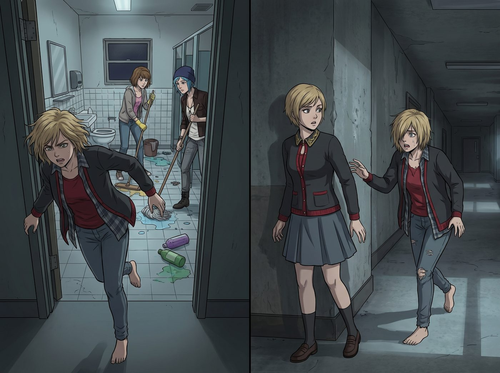

走廊盡頭的懺悔

一、赤腳的追逐
吃完外賣,Kate 禮貌告辭離開。趁著 Max 和 Chloe 轉身去衛生間收拾散落的顯影盆、開始拖地的空檔,Victoria 猛地站起身,連鞋都來不及穿上,頭髮依然凌亂地披散著,光著一雙腳,幾乎是連滾帶爬地衝出房門,追向剛剛消失在走廊轉角的 Kate。
「等等!」她的聲音帶著不常見的急切,「Kate,等一下!」
二、追上腳步
Kate 在轉角處停下腳步,回過頭,看到 Victoria 這副狼狽模樣——赤腳踩在冰冷的水泥地上,散亂的頭髮遮住半邊臉頰,身上還穿著那件洗得掉色的法蘭絨襯衫,連呼吸都因為這場倉促的追逐而顯得有些急促。
「Victoria?」她的語氣裡帶著一絲意外,「怎麼了?」
三、沒有偽裝的對話
走廊裡只有老舊日光燈發出的微弱嗡嗡聲。Victoria 停在 Kate 身後兩步遠的地方,雙手緊緊攥著法蘭絨襯衫的下擺,深吸了一口氣,像是在積蓄某種積壓已久的勇氣。
「Kate。」她開口,聲音裡沒有了往日的尖酸與居高臨下,反而帶著一絲不易察覺的顫抖。
Kate 靜靜地看著她,沒有催促,只是耐心地等待。
四、遲到的懺悔
Victoria 低著頭,視線落在走廊斑駁的油氈地面上,像是無法直視對方的眼睛。
「關於……之前在漩渦俱樂部派對上的事,」她的聲音越來越輕,「還有那些流傳出去的影片和塗鴉……」
「我一直沒有正式跟妳說過。」她深吸一口氣,「我知道一句對不起,根本抹不掉妳經歷過的那些地獄,我也沒資格奢求妳的原諒。」
她的手指緊緊絞著衣角,指節都有些發白。
「我當時只是……太想維持那個虛偽的社交圈子,太自私、太蠢了。」
說到最後,這位平日不可一世的名媛,眼眶微微泛紅,聲音幾乎哽咽在喉嚨裡。
五、聖潔的釋懷
Kate 安靜地聽完,眼神清澈而溫和。她往前走了一步,輕輕將手搭在 Victoria 依然緊繃著的手臂上。
「Victoria,」她的聲音很輕,卻異常堅定,「那些痛苦,確實很難忘記。但如果連 Max 和 Chloe 都能接納今晚穿著舊襯衫吃漢堡的妳,上帝也不會一直抓著過去不放。」
她頓了頓,唇角泛起一抹溫柔的笑意。
「我接受妳的道歉。」她說,「不是為了替妳減輕內疚,而是為了我們都能繼續往前走。」
六、遞來的濕紙巾
Kate 從口袋裡摸出一小包還沒拆封的薄荷濕紙巾,遞了過去。
「擦擦手吧,」她溫柔地笑了笑,「顯影液的味道很難洗掉。」她瞥了眼 Victoria 那雙光著的赤腳,又補了一句,「地上涼,早點回去吧,她們還在等妳分最後一塊披薩。」
Victoria 接過那包濕紙巾,指尖微微發顫,一時說不出話,只能用力點了點頭。
Kate 朝她揮了揮手,轉身繼續走向自己的房間,腳步一如既往地輕盈。
七、坍塌的高牆
Victoria 站在原地,望著她的背影消失在走廊盡頭,低頭看了看手裡那包薄荷濕紙巾,又看了看自己那雙沾滿灰塵、光裸著踩在冰冷地面上的雙腳。
她慢慢彎腰,拆開那包濕紙巾,仔細擦拭著手上殘留的顯影液痕跡,動作輕柔得近乎虔誠。
當她攥著那包用了一半的濕紙巾,赤腳走回房間時,臉上雖然依舊努力維持著慣常的冷靜與矜持,但心底那道用傲慢與刻薄築起了多年的高牆,終於在這個平凡的夜晚,徹底坍塌消融。